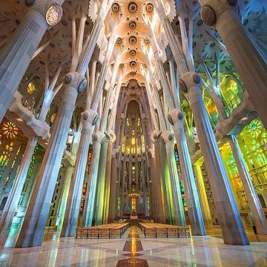

Sagrada Família
Es gibt Kirchen, die man betritt, um zu beten – und es gibt die Sagrada Família, die man betritt und erstmal nur den Kopf in den Nacken legt. Kein Bild bereitet einen wirklich darauf vor, wie es sich anfühlt, unter diesen Säulen zu stehen, die sich wie Bäume nach oben verzweigen und ein Blätterdach aus Stein und buntem Licht bilden.

Geschichte
Gaudí übernahm das Projekt 1883, ein Jahr nach Baubeginn, und widmete ihm die letzten 43 Jahre seines Lebens – ab 1915 fast ausschließlich, er zog sogar in eine kleine Werkstatt auf der Baustelle. Als er 1926 von einer Straßenbahn erfasst wurde und starb, war gerade einmal die Krypta und die Nativitätsfassade fertig. Der Bau ging seitdem in Wellen weiter, immer wieder unterbrochen (u. a. durch den Spanischen Bürgerkrieg, bei dem Gaudís Werkstatt mit vielen Originalplänen niederbrannte) und finanziert ausschließlich durch Eintrittsgelder und Spenden, nie durch staatliche Mittel.
Warum besonders
Die Sagrada Família ist als einziges Bauwerk der Welt eine Kathedrale, die als Weiterführung eines einzelnen Architekten-Visionärs über Generationen von Nachfolgern gebaut wird, ohne dass die ursprüngliche Idee verwässert. Die drei Fassaden erzählen die Geburt (Nativitätsfassade, von Gaudí selbst noch mitgestaltet), das Leiden (Passionsfassade, bewusst schroff und kantig, von Josep Maria Subirachs) und die noch im Bau befindliche Herrlichkeit Christi.
Praktische Hinweise
Euer Termin: Sonntag, 30.08.2026, Einlass 10:45 Uhr, Eingang Carrer de la Marina. Audioguide ausschließlich über die offizielle App – vorher übers Hotel-WLAN laden, vor Ort gibt es keine Verkaufsstelle dafür und das Netz in der Basilika ist schwach. Sicherheitskontrolle wie am Flughafen, keine großen Rucksäcke.